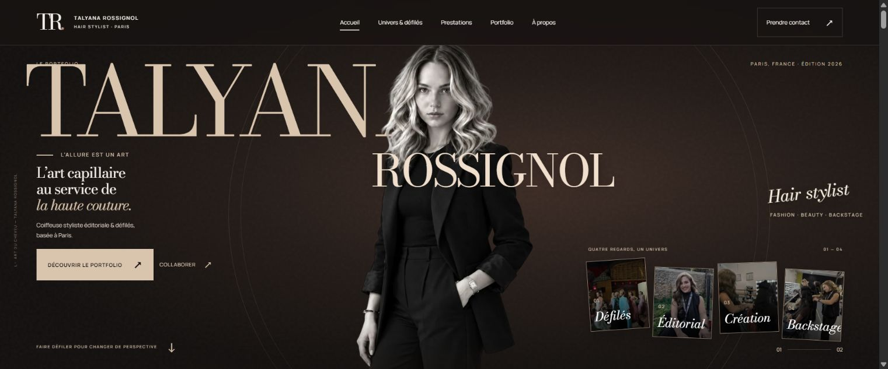
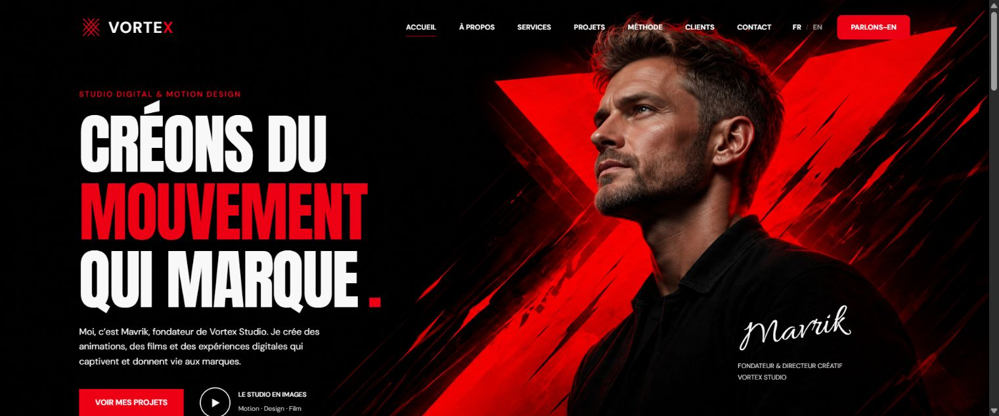
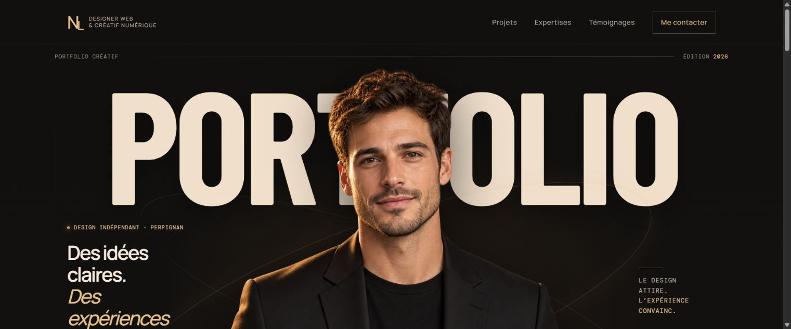
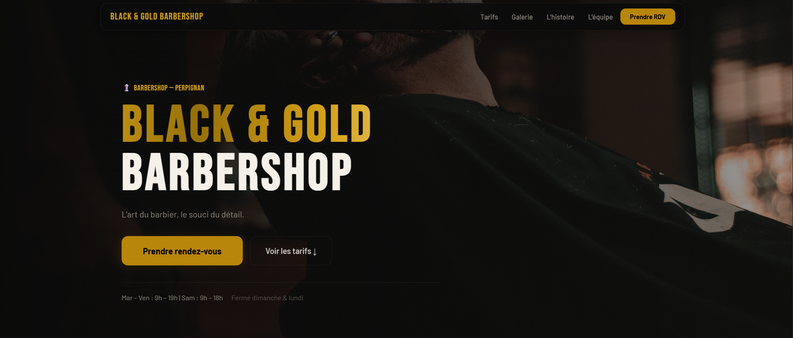
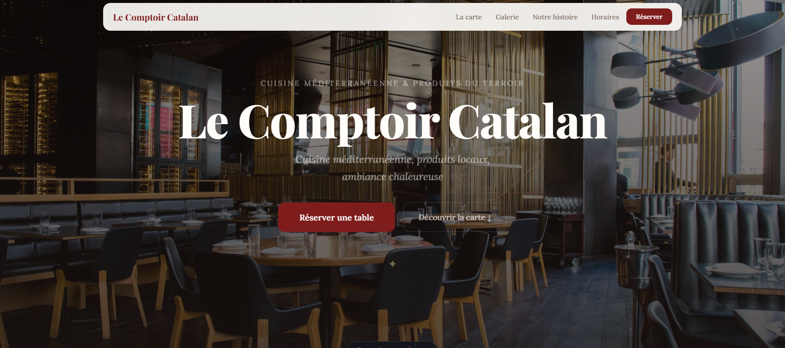
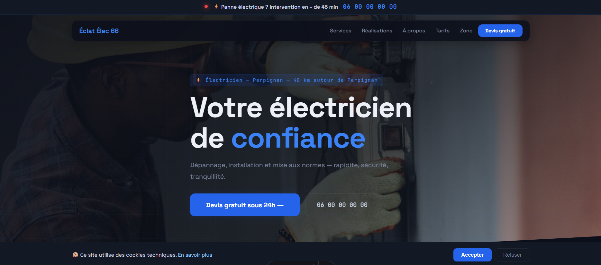

ExplorerL’allure de la mode, la précision du web.
Je suis Loïc. Je conçois des sites qui marquent,
des applications utiles et des automatisations
qui vous libèrent du temps.
Des univers différents.
La même envie de faire juste.

ExplorerL’allure de la mode, la précision du web.

ExplorerUne expérience qui se raconte en mouvement.

ExplorerDu caractère, de l’espace et le sens du détail.
Un regard créatif, une approche technique.
Et les bons outils pour faire avancer votre projet.
Sites vitrines expressifs, portfolios immersifs et boutiques en ligne. Je relie identité, expérience utilisateur et performance pour donner à votre activité une présence qui compte.
Du prototype à l’application, je transforme un besoin concret en un produit simple à utiliser. Interfaces, logique métier, API et expérience mobile : chaque détail sert l’usage.
Je connecte vos outils et automatise vos tâches répétitives : collecte de demandes, suivi client, contenus et synchronisation de données. Des workflows construits autour de votre façon de travailler.
Prototyper, construire, tester, affiner. J’associe code, outils no-code et motion design pour donner une forme concrète à vos idées et créer des expériences mémorables.
Un formulaire devient un contact. Un contact déclenche la bonne action. Vos outils se parlent, votre activité avance.
Je construis ces connexions avec n8n, Make et les outils no-code adaptés à votre projet.
Imaginer mon automatisationUne demande reçue sur votre site est enregistrée dans votre CRM, puis transmise à votre équipe.
Une sélection de mes templates pour
les artisans et les commerces de proximité.



Développeur web et mobile, product builder, et toujours une idée en tête. J’aime relier le beau et l’utile : une interface qui donne envie, un produit qui répond à un besoin, un processus qui devient plus simple.
Mon parcours en e-commerce, notamment sur PrestaShop et Shopify, m’a appris à penser au-delà de l’écran : performance, référencement et expérience utilisateur.
Je prépare la création de ma société, LORN DIGITAL STUDIO, pour réunir création web, applications mobiles et automatisation. La société est en cours de création.
Le studio en préparation.
Création web, applications & produits numériques.
Sites pour artisans & commerçants.
Aperçu avant lancement.